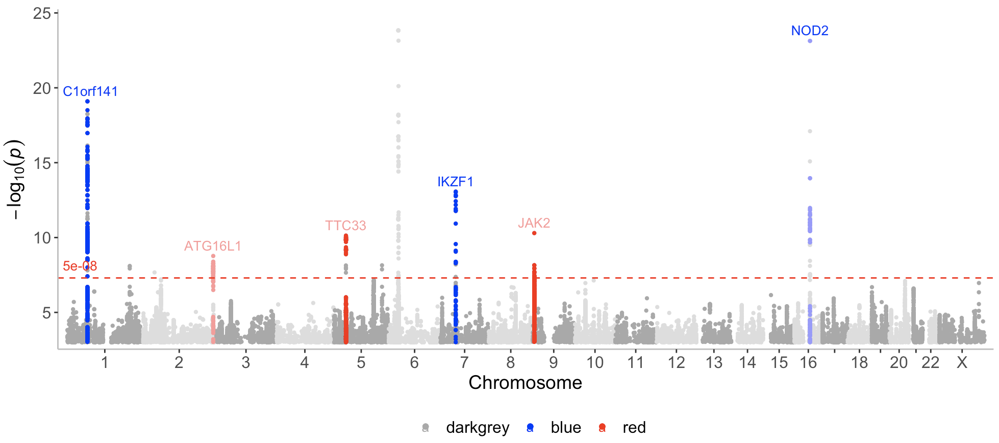
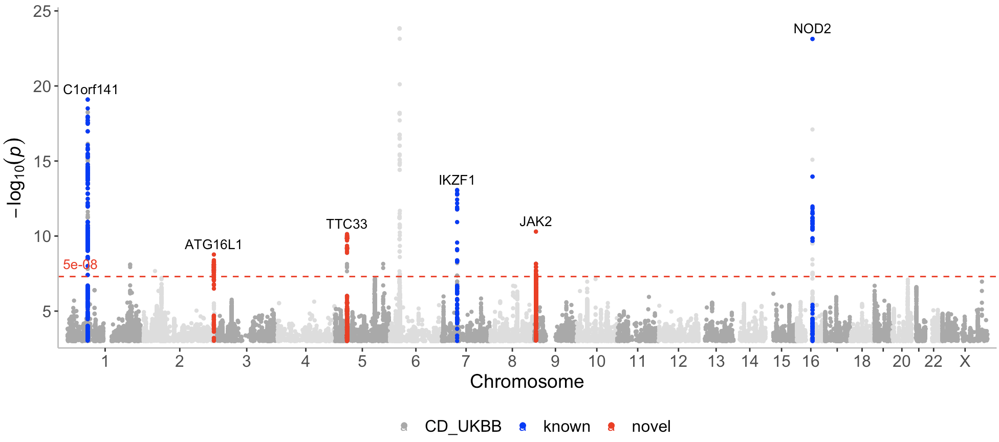
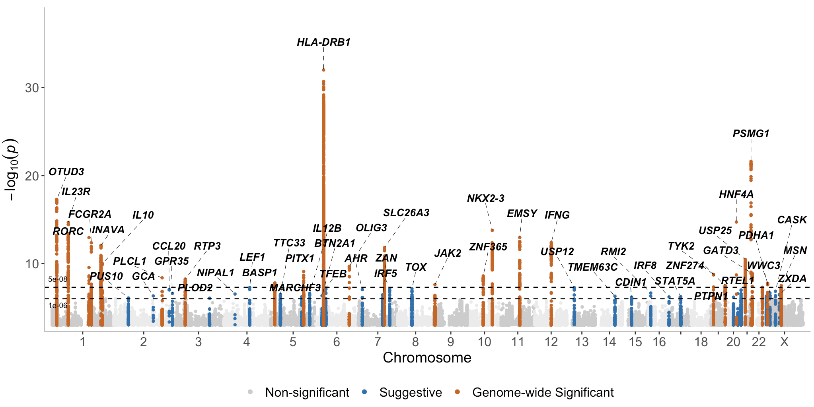

Note!!! topr v.2.0.0 can be used with any species and any number of chromosomes!!
See https://github.com/totajuliusd/topr?tab=readme-ov-file#how-to-use-topr-with-other-species-than-human

Click here to see the commands used in the .gif above
library(topr)
# Single GWAS manhattan plots
# Start by taking a look at one of topr's inbuilt datasets
CD_UKBB %>% head()
manhattan(CD_UKBB)
manhattan(CD_UKBB, annotate=5e-9)
CD_UKBB %>% get_lead_snps()
CD_UKBB %>% get_lead_snps() %>% annotate_with_nearest_gene()
manhattan(CD_UKBB, annotate=1e-9, highlight_genes=c("FTO","THADA"))
manhattan(CD_UKBB, annotate=1e-9, highlight_genes=c("FTO","THADA"), color="darkred")
# Multi GWAS manhattan/miami plots
CD_FINNGEN %>% head()
manhattan(list(CD_UKBB, CD_FINNGEN))
manhattan(list(CD_UKBB, CD_FINNGEN), legend_labels=c("UKBB","FINNGEN"))
manhattan(list(CD_UKBB, CD_FINNGEN), legend_labels=c("UKBB","FINNGEN"), ntop=1)
# Add the third GWAS result...
UC_UKBB %>% head()
manhattan(list(CD_UKBB, CD_FINNGEN, UC_UKBB))
manhattan(list(CD_UKBB, CD_FINNGEN, UC_UKBB), legend_labels=c("CD UKBB","CD FINNGEN", "UC UKBB"))
# display the first input dataset on the top plot (ntop = 1)
manhattan(list(CD_UKBB, CD_FINNGEN, UC_UKBB), legend_labels=c("CD UKBB","CD FINNGEN", "UC UKBB"), ntop=1)
# display the first TWO input datasets on the top plot (ntop = 2)
manhattan(list(CD_UKBB, CD_FINNGEN, UC_UKBB), legend_labels=c("CD UKBB","CD FINNGEN", "UC UKBB"), ntop=2)
manhattan(list(CD_UKBB, CD_FINNGEN, UC_UKBB), legend_labels=c("CD UKBB","CD FINNGEN", "UC UKBB"), ntop=2, annotate=1e-12)
#apply different annotation thresholds to the three datasets ( annotate = c(5e-9,1e-12,1e-15) )
manhattan(list(CD_UKBB, CD_FINNGEN, UC_UKBB), legend_labels=c("CD UKBB","CD FINNGEN", "UC UKBB"), ntop=2, annotate=c(5e-9,1e-12,1e-15))
# Make the plot look prettier by resetting they scales of the x and y axes, changing the angle of the annotation text (angle = 90), moving it up a bit (nudge_y = 12) and slightly reducing the size of all text (scale = 0.7)
manhattan(list(CD_UKBB, CD_FINNGEN, UC_UKBB), legend_labels=c("CD UKBB","CD FINNGEN", "UC UKBB"), ntop=2, annotate=c(5e-9,1e-12,1e-15), ymax=65, ymin=-55, nudge_y=12,angle=90, scale=0.7)
# The same plot as above in the old topr grey theme (theme_grey = T)
manhattan(list(CD_UKBB, CD_FINNGEN, UC_UKBB), legend_labels=c("CD UKBB","CD FINNGEN", "UC UKBB"), ntop=2, annotate=c(5e-9,1e-12,1e-15), ymax=65, ymin=-55, nudge_y=12,angle=90, scale=0.7, theme_grey = T)For more examples see the topr webpage.
Citation
Please cite the following paper if you use topr in a publication:
Juliusdottir, T. topr: an R package for viewing and annotating genetic association results. BMC Bioinformatics 24, 268 (2023). https://doi.org/10.1186/s12859-023-05301-4
Installation
Install from CRAN:
install.packages("topr")Or from github:
devtools::install_github("totajuliusd/topr")And then load the package:
Main features and functionality
topr is written in the R programming language and utilises the ggplot2 and ggrepel R graphics libraries for plotting.
topr’s two main plot functions are manhattan() and regionplot(). See the topr webpage for more details on all of topr’s plot functions.
The manhattan() function returns a ggplot object. The regionplot() function draws three ggplotGrobs aligned using egg::gtable_frame, however it can be called with the extract_plots argument set to TRUE to return a list of three ggplot objects instead.
Example input datasets
See Input datasets for more detailed information.
Input datasets must include least three columns (CHROM, POS and P), where naming of the columns is flexible (i.e the chr label can be either chr or chrom and is case insensitive).
topr has 3 inbuilt GWAS results (CD_UKBB, CD_FINNGEN and UC_UKBB). To get information on them, do:
?CD_UKBB
?CD_FINNGEN
?UC_UKBBThe chromosome in the CHROM column can be represented with or without the chr suffix, e.g (chr1 or 1)
Basic usage
Basic usage of topr’s key functions is as follows.
Manhattan
See manhattan for more detailed examples of how to use the manhattan plot function.
View the whole genome association results on a Manhattan plot:
manhattan(CD_UKBB)Annotate the lead/index variants (with p-values below 5e-9) with their nearest gene:
manhattan(CD_UKBB, annotate=5e-9)View multiple GWAS results on the same plot
Regionplot
See regionplot for more detailed examples of how to use the regionplot function.
Further zoom-in on a genetic region by gene name (IL23R):
regionplot(CD_UKBB, gene="IL23R")View the correlation pattern between the variants within the region in a locuszoom like plot. Note that the variant correlation (R2) has to be pre-calculated and included in the input dataframe.
locuszoom(R2_CD_UKBB)Display multiple GWAS results zoomed in on the IL23R gene
regionplot(list(UC_UKBB, CD_UKBB), gene="IL23R")Other useful functions
Extract lead/index variants from the GWAS dataset (CD_UKBB):
get_lead_snps(CD_UKBB)Annotate the lead/index variants with their nearest gene:
get_lead_snps(CD_UKBB) %>% annotate_with_nearest_gene()Get genomic coordinates for a gene (topr uses genome build GRCh38.p13 by default):
get_gene_coords("IL23R")Get genomic coordinates for a gene using genome build GRCh37 instead.
get_gene_coords("IL23R", build="37")Get snps within a region:
get_snps_within_region(CD_UKBB, region = "chr1:67138906-67259979")Get the top variant on a chromosome:
get_top_snp(CD_UKBB, chr="chr1")Create a snpset by extracting the top/lead variants from the CD_UKBB dataset and overlapping variants (by position) in the CD_FINNGEN dataset.
get_snpset(CD_UKBB, CD_FINNGEN)Create an effecplot by plotting the effect sizes of top/lead variants overlapping in two datasets.
effectplot(list(CD_UKBB, CD_FINNGEN), annotate = 1e-08)How to use topr with other species than human
By default topr uses the human genome assembly for annotation. As of from version 2.0.0. topr can be used with different gene annotations as long as they are provided by the user in a specific format.
Required columns in the gene annotation file are the following: chrom,gene_start_gene_end,gene_symbol,biotype,exon_chromstart and exon_chromend
To see an example of a gene annotation file, view the inbuilt human genome annotation file (hg38) from the enshuman package which comes with topr v.2.0.0:
Note that there is no “chr” prefix in front of the chromosome name.
Example using the mouse genome
Start by downloading and unzipping the mouse gtf file. From within the terminal this can be done as follows:
wget https://ftp.ensembl.org/pub/current/gtf/mus_musculus/Mus_musculus.GRCm39.111.gtf.gz
gunzip Mus_musculus.GRCm39.111.gtf.gzNext convert the file into the format required by topr. This can for example be done using the mk_annotation_file.py script (the content of the script is shown below the command).
Click here to see what the mk_annotation_file.py looks like
#!/usr/bin/env python
import sys
import re
if len(sys.argv) != 2:
print("Usage: {} <file>".format(sys.argv[0]))
sys.exit(1)
file_name = sys.argv[1]
try:
with open(file_name, 'r') as fh:
genes = {}
for line in fh:
if not line.startswith('#'):
columns = line.strip().split('\t')
chrom, start, end = columns[0], columns[3], columns[4]
if columns[2] == 'exon':
gene_name = None
match = re.search(r'gene_name\s+"(\S+)"', columns[8])
if match:
gene_name = match.group(1)
if gene_name in genes:
if "exon_chromstart" in genes[gene_name]:
genes[gene_name]["exon_chromstart"].append(start)
else:
genes[gene_name]["exon_chromstart"] = [start]
if "exon_chromend" in genes[gene_name]:
genes[gene_name]["exon_chromend"].append(end)
else:
genes[gene_name]["exon_chromend"] = [end]
elif columns[2] == 'gene':
gene_name, gene_type = None, None
match = re.search(r'gene_name\s+"(\S+)".+gene_biotype\s+"(\S+)"', columns[8])
if match:
gene_name, gene_type = match.group(1), match.group(2)
if gene_name not in genes:
genes[gene_name] = {
"gene_start": start,
"gene_end": end,
"chr": chrom,
"biotype": gene_type
}
except FileNotFoundError:
print("File not found: {}".format(file_name))
sys.exit(1)
# Print the output
print("\t".join(["chrom", "gene_start", "gene_end", "gene_symbol", "biotype", "exon_chromstart", "exon_chromend"]))
for gene, data in genes.items():
if not gene:
continue
exon_starts = ",".join(data.get("exon_chromstart", []))
exon_ends = ",".join(data.get("exon_chromend", []))
print("\t".join([data["chr"], data["gene_start"], data["gene_end"], gene, data["biotype"], exon_starts, exon_ends]))Then from within your R editor do:
mm39 <- read.delim("Mus_musculus.GRCm39.111.tsv", sep="\t",header=T)Then optionally to save the data in a more compact .rda format:
save(mm39, file="mus_musculus.rda", compress='xz')
#and then to load from the .rda file, do:
load("mus_musculus.rda")Then to use the mouse build with topr, assign mm39 to the build argument in topr’s functions.
Examples (note that CD_UKBB are human association results, and only used here as a proof of concept):
manhattan(CD_UKBB, annotate=1e-14, build=mm39)
regionplot(CD_UKBB, gene="Cps1", build=mm39)
CD_UKBB %>% get_lead_snps() %>% annotate_with_nearest_gene(build=mm39)
get_gene_coords("Cps1", build=mm39)How to color specific peaks on the Manhattan plot
I use the inbuilt CD_UKBB dataset in this example and create two dataframes containing hypothetically known and novel loci.
I start by annotating the variants in the CD_UKBB dataset so they can be extracted based on their nearest gene annotation.
CD_UKBB_annotated <- CD_UKBB %>% annotate_with_nearest_gene()Next I create two dataframes, one including an example of hypothetically known variants and the other an example of hypothetically novel variants.
known <- CD_UKBB_annotated %>% filter(Gene_Symbol %in% c("C1orf141","IL23R","NOD2","CYLD-AS1","IKZF1"))
novel <- CD_UKBB_annotated %>% filter(Gene_Symbol %in% c("JAK2","TTC33","ATG16L1"))Now I can call the manhattan function with a list containing the 3 datasets (CD_UKBB, known, novel) and assign a color to each dataset (darkgrey, blue, red), where novel loci are displayed in red.
manhattan(list(CD_UKBB, known, novel), color=c("darkgrey","blue","red"), annotate = c(1e-100,5e-08,5e-08))
Note that here I only want to annotate the top variants in the novel and known datasets, and therefore I set the first p-value (for the first dataset CD_UKBB) assigned to the annotate argument to a very low number (1e-100) (so that nothing gets annotated in the CD_UKBB dataset).
As can be seen on the plot, known and novel peaks on even numbered chromosomes are displayed in a lighter color of blue and red. This can be altered with the even_no_chr_lightness argument and shown next.
Use the same color of red and blue for all the peaks
By default, association points on even numbered chromosomes (2,4,6 etc) are displayed in a slightly lighter color compared to the association points displayed on odd numbered chromosomes (1,3,5 etc).
This can be controlled with the even_no_chr_lightness argument which is set to 0.8 by default. If this argument is set to 0.5 for a given dataset and color, the same color will be displayed on all chromosomes for this dataset. A value below 0.5 will result in a darker color displayed for even numbered chromosomes, whereas a value above 0.5 results in a lighter color.
manhattan(list(CD_UKBB, known, novel), color=c("darkgrey","blue","red"), annotate = c(1e-100,5e-08,5e-08 ), even_no_chr_lightness = c(0.8,0.5,0.5), legend_labels = c("CD_UKBB","Known loci","Novel loci"), label_color = "black")
manhattanExtra
Contribution from Kyle Scott kscott-1
Create a Manhattan plot highlighting genome-wide significant and suggestive loci using the manhattanExtra function.
manhattanExtra(UC_UKBB, flank_size = 1e6)
Locuszoom example
Contribution from Kyle Scott kscott-1
Extract the snp of interest rs7713270, from the inbuilt CD_UKBB dataset.
Retrieve the R2 values with LDroxy
Run LDproxy to get variants correlated with rs7713270. Use the European (EUR) 1000 Genomes Project population and genome build GRCh38.
Note! To be able to run LDproxy, you have to register and get a token (see https://ldlink.nih.gov/?tab=apiaccess).
SNP <- LDproxy(
snp = snp, pop = "EUR", r2d = "r2",
token = "NULL", genome_build = paste0("grch", "38")
)
LD.link <- SNP %>%
mutate(CHROM = str_extract(Coord, "chr[^:]*")) %>%
mutate(POS = as.numeric(str_extract(Coord, "(?<=:)[0-9]*"))) %>%
select(CHROM, POS, R2)Get help:
?manhattan()
?regionplot()
?locuszoom()